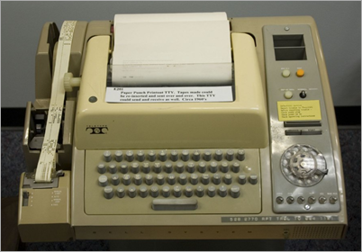
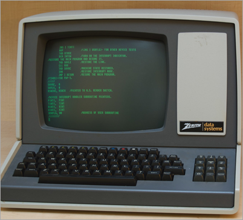
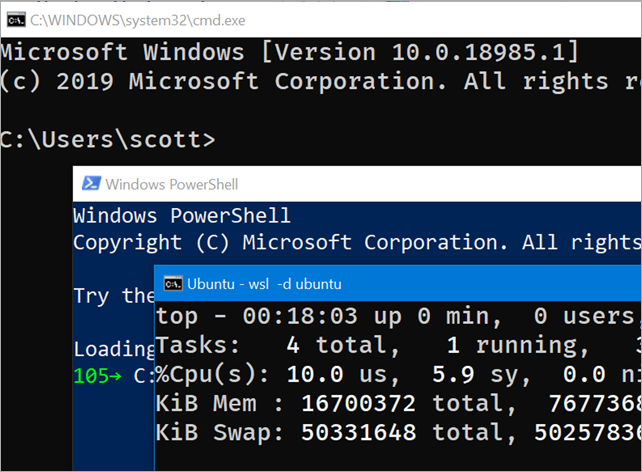
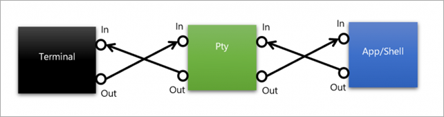
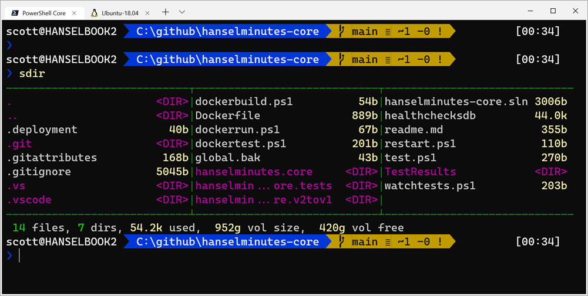

<!DOCTYPE html>
<html>
<head><meta name="generator" content="Hexo 3.9.0">
  <!-- hexo-inject:begin --><!-- hexo-inject:end --><meta charset="utf-8">
  <meta http-equiv="X-UA-Compatible" content="IE=edge">
  
  <title>[翻译]控制台、终端和Shell的区别是什么？ | uint128&#39;s Blog</title>
  <meta name="description" content="uint128&#39;s blog">
  <meta name="keywords" content="uint128,uint128&#39;s blog,uint128.com">
  <meta name="HandheldFriendly" content="True">
  <meta name="apple-mobile-web-app-capable" content="yes">
  <link rel="shortcut icon" href="/">
  <link rel="alternate" href="/atom.xml" title="uint128's Blog">
  <meta name="viewport" content="width=device-width, initial-scale=1, maximum-scale=1">
  <meta name="description" content="控制台、终端和Shell的区别是什么？">
<meta name="keywords" content="uint128,uint128&#39;s blog,uint128.com">
<meta property="og:type" content="article">
<meta property="og:title" content="[翻译]控制台、终端和Shell的区别是什么？">
<meta property="og:url" content="https://uint128.com/2020/07/18/翻译-控制台、终端和Shell的区别是什么？/index.html">
<meta property="og:site_name" content="uint128&#39;s Blog">
<meta property="og:description" content="控制台、终端和Shell的区别是什么？">
<meta property="og:locale" content="zh-cn">
<meta property="og:image" content="https://uint128.com/2020/07/18/翻译-控制台、终端和Shell的区别是什么？/pic1.png">
<meta property="og:image" content="https://uint128.com/2020/07/18/翻译-控制台、终端和Shell的区别是什么？/pic2.png">
<meta property="og:image" content="https://uint128.com/2020/07/18/翻译-控制台、终端和Shell的区别是什么？/pic3.png">
<meta property="og:image" content="https://uint128.com/2020/07/18/翻译-控制台、终端和Shell的区别是什么？/pic4.png">
<meta property="og:image" content="https://uint128.com/2020/07/18/翻译-控制台、终端和Shell的区别是什么？/pic5.png">
<meta property="og:updated_time" content="2020-07-18T11:27:27.874Z">
<meta name="twitter:card" content="summary">
<meta name="twitter:title" content="[翻译]控制台、终端和Shell的区别是什么？">
<meta name="twitter:description" content="控制台、终端和Shell的区别是什么？">
<meta name="twitter:image" content="https://uint128.com/2020/07/18/翻译-控制台、终端和Shell的区别是什么？/pic1.png">
    
  <link href="https://fonts.googleapis.com/css?family=Inconsolata|Titillium+Web" rel="stylesheet">
  <link href="https://fonts.googleapis.com/css?family=Roboto+Mono" rel="stylesheet">
  <link href="//cdnjs.cloudflare.com/ajax/libs/node-waves/0.7.5/waves.min.css" rel="stylesheet">
  <link rel="stylesheet" href="/style.css">
  <script>
    function setLoadingBarProgress(num) {
      document.getElementById('loading-bar').style.width=num+"%";
    }
  </script>
  <script src="/js/md5.js"></script>
<link rel="alternate" href="/atom.xml" title="uint128's Blog" type="application/atom+xml"><!-- hexo-inject:begin --><!-- hexo-inject:end -->
</head>
</html>
<body>
  <!-- hexo-inject:begin --><!-- hexo-inject:end --><div id="loading-bar-wrapper">
  <div id="loading-bar"></div>
</div>


  <script>setLoadingBarProgress(20)</script> 
  <header class="l_header">
	<div class='wrapper'>
		<div class="nav-main container container--flex">
			<a class="logo flat-box" href='/' >
				uint128's Blog
			</a>
			<div class='menu'>
				<ul class='h-list'>
					
						<li>
							<a class='flat-box nav-home' href='/'>
								Home
							</a>
						</li>
					
						<li>
							<a class='flat-box nav-archives' href='/archives'>
								Archives
							</a>
						</li>
					
						<li>
							<a class='flat-box nav-about' href='/about'>
								About
							</a>
						</li>
					
				</ul>
				<div class='underline'></div>
			</div>
			
				<div class="m_search">
					<form name="searchform" class="form u-search-form">
						<input type="text" class="input u-search-input" placeholder="Search" />
						<span class="icon icon-search"></span>
					</form>
				</div>
			
			<ul class='switcher h-list'>
				
					<li class='s-search'><a href='javascript:void(0)'><span class="icon icon-search flat-box"></span></a></li>
				
				<li class='s-menu'><a href='javascript:void(0)'><span class="icon icon-menu flat-box"></span></a></li>
			</ul>
		</div>
		
		<div class='nav-sub container container--flex'>
			<a class="logo" class="flat-box" href='javascript:void(0)'>
				Word of Forks
			</a>

			<ul class='switcher h-list'>
				<li class='s-comment'><a href='javascript:void(0)'><span class="icon icon-chat_bubble_outline flat-box"></span></a></li>
				<li class='s-top'><a href='javascript:void(0)'><span class="icon icon-arrow_upward flat-box"></span></a></li>
				<li class='s-toc'><a href='javascript:void(0)'><span class="icon icon-format_list_numbered flat-box"></span></a></li>
			</ul>
		</div>
	</div>
</header>
<aside class="menu-phone">
	<nav>
		
			<a href="/" class="nav-home nav">
				Home
			</a>
		
			<a href="/archives" class="nav-archives nav">
				Archives
			</a>
		
			<a href="/about" class="nav-about nav">
				About
			</a>
		
	</nav>
</aside>

    <script>setLoadingBarProgress(40);</script>
  <div class="l_body">
    <div class='container clearfix'>
      <div class='l_main'>
        <article id="post-翻译-控制台、终端和Shell的区别是什么？"
  class="post white-box article-type-post"
  itemscope itemprop="blogPost">
	<section class='meta'>
	<h2 class="title">
  	<a href="/2020/07/18/翻译-控制台、终端和Shell的区别是什么？/">
    	[翻译]控制台、终端和Shell的区别是什么？
    </a>
  </h2>
	<time>
	  7月 18, 2020
	</time>
	
	</section>
	
		<section class="toc-wrapper"><ol class="toc"><li class="toc-item toc-level-2"><a class="toc-link" href="#终端-Terminal"><span class="toc-number">1.</span> <span class="toc-text">终端(Terminal)</span></a></li><li class="toc-item toc-level-2"><a class="toc-link" href="#控制台-Console"><span class="toc-number">2.</span> <span class="toc-text">控制台(Console)</span></a></li><li class="toc-item toc-level-2"><a class="toc-link" href="#SHELL"><span class="toc-number">3.</span> <span class="toc-text">SHELL</span></a></li><li class="toc-item toc-level-2"><a class="toc-link" href="#你选择的-Windows-控制台吗？"><span class="toc-number">4.</span> <span class="toc-text">你选择的 Windows 控制台吗？</span></a></li><li class="toc-item toc-level-2"><a class="toc-link" href="#伪控制台、伪终端、PTY、伪TTY-CconPTY"><span class="toc-number">5.</span> <span class="toc-text">伪控制台、伪终端、PTY、伪TTY(CconPTY)</span></a></li><li class="toc-item toc-level-2"><a class="toc-link" href="#回到你对-Windows-控制台的选择"><span class="toc-number">6.</span> <span class="toc-text">回到你对 Windows 控制台的选择</span></a></li></ol></section>
	
	<section class="article typo">
  	<div class="article-entry" itemprop="articleBody">
    	<p>控制台、终端和Shell的区别是什么？<br><a id="more"></a></p>
<p>原文链接：<a href="https://www.hanselman.com/blog/WhatsTheDifferenceBetweenAConsoleATerminalAndAShell.aspx" target="_blank" rel="noopener">https://www.hanselman.com/blog/WhatsTheDifferenceBetweenAConsoleATerminalAndAShell.aspx</a></p>
<p>我见过许多类似的问题，但是这些问题他们本身说明了对一些重要术语的误解。</p>
<blockquote>
<ul>
<li>为什么我们要通过 Windows Terminal 使用 PowerShell？</li>
<li>我不需要通过 WSL 来使用 bash，我使用 Cygwin</li>
<li>我可以将 Conemu 和 PowerShell 一起使用吗或者我需要使用 Windows Terminal吗？</li>
</ul>
</blockquote>
<p>让我们从词汇表开始辨析这些词语。</p>
<h2 id="终端-Terminal"><a href="#终端-Terminal" class="headerlink" title="终端(Terminal)"></a>终端(Terminal)</h2><p>终端(Terminal)来自终止(Terminate)一词，这表示它是终止的一端或通讯过程的“终止端”。我们经常听到“哑终端”(dumb terminal)这个词，它指的是一个基于文本的环境，你身边的电脑只是接收文本输入和显示文本，而真正在执行工作的是另一端的大型机。</p>
<p>电传打字机(TTY, teletypewriter)是第一种终端。在你面前的是一种文字打字机而不是屏幕。当你在打字机上打字，你会在一张纸上看到你所打出的文本，并且文本会输入到计算机中。当计算机做出回应，你会看到打字机自动在同一张纸上打字。</p>
<p></p>
<p>当我们从软件意义上提及终端，我们指的是终端或电传打字机的文字软件版本。Windows Terminal就是这种。它非常擅长显示文字输出。它可以接收输入并传递它。但是终端并不聪明。它实际上不处理你的输入，它不会查看你的文件或进行思考。</p>
<h2 id="控制台-Console"><a href="#控制台-Console" class="headerlink" title="控制台(Console)"></a>控制台(Console)</h2><p>在 20 世纪中期人们会有一种叫做控制台或者控制台机柜的家具放在客厅。在计算机中，控制台是一种集成了屏幕和键盘的控制台或机柜。但它实际上是一个终端。技术上说，控制台是设备而终端现在是控制台中的软件程序。</p>
<p></p>
<p>在软件世界里，终端和控制台在所有方面都是同义词。</p>
<h2 id="SHELL"><a href="#SHELL" class="headerlink" title="SHELL"></a>SHELL</h2><p>终端会将用户的输入发送给 Shell 程序。Shell 程序生成输出并传递回终端让其显示。下面是一些 Shell 程序：</p>
<blockquote>
<p>bash, fish, zsh, ksh, sh, tsch</p>
<p>PowerShell, pwsh</p>
<p>cmd, yori, 4dos, command.com</p>
</blockquote>
<p>现在，你有了这些终端，是一个更有意义的要点。<strong>你对 Shell 的选择不应该也不能决定你对终端软件的选择。</strong></p>
<blockquote>
<p>题外话：WSL 和 WSL2 (适用于 Linux 的 windows 子系统,the Windows Subsystem for Linux) 是运行于 Windows 10 的完整的本地 Linux(或许多 Linux)。它们是完整而且真实的。WSL2 附带了一个真实的 Linux 内核并且运行在 Windows 10 上。Cygwin 不是一个 Linux。Cygwin 是 Windows 上一个包含了 GNU 和 开源工具的大集合，它们提供的功能类似于 Linux。但 Cygwin 不是 Linux，它是一个模拟器。是针对 Win32 编译的 GNU 实用程序。它非常好，但对你来说知道它们之间的区别也很重要。Cygwin 可以让你运行你的 bash shell 脚本，但是它不能运行 Apache、Docker 或其它真正的 ELF 二进制文件和 Linux 应用程序。</p>
</blockquote>
<h2 id="你选择的-Windows-控制台吗？"><a href="#你选择的-Windows-控制台吗？" class="headerlink" title="你选择的 Windows 控制台吗？"></a>你选择的 Windows 控制台吗？</h2><p>Windows 附带了许多 Shell。这是我正在运行的一些。(图)注意到“chrome”或它们周围的边框和标题了吗？这些 shell 都由一个你从未听过的传统 windows 控制台托管，它叫做 conhost.exe。你可以转到命令提示符，键入 powershell，cmd 或 ubuntu，任意数量的 shell 都能运行。Conhost 完成输入和输出的工作。</p>
<p>现在，请忘记 conhost 的存在，因为它很烂，它已经过时了。</p>
<p></p>
<h2 id="伪控制台、伪终端、PTY、伪TTY-CconPTY"><a href="#伪控制台、伪终端、PTY、伪TTY-CconPTY" class="headerlink" title="伪控制台、伪终端、PTY、伪TTY(CconPTY)"></a>伪控制台、伪终端、PTY、伪TTY(CconPTY)</h2><p>（不是很懂这一段）</p>
<p>Pseudo Terminals are terminal emulators or software interfaces that emulate terminals. They pretend to be terminals like the ones above. *Nix systems have long had a pseudo-terminal (PTY) infrastructure and now Windows as a pseudoconsole (ConPTY) as well.</p>
<p>Window’s new ConPTY interface is the future of consoles and terminals on Windows. If you choose a 3rd party (non-built-in) console applications for Windows, make sure it supports ConPTY and it’ll be a better experience than some of the older consoles that use screen scraping or other hacks.</p>
<p></p>
<h2 id="回到你对-Windows-控制台的选择"><a href="#回到你对-Windows-控制台的选择" class="headerlink" title="回到你对 Windows 控制台的选择"></a>回到你对 Windows 控制台的选择</h2><p>记住在 Windows 上你可以使用很多 shell。如果你不喜欢 conhost.exe （你不应该这样），有大量你可以使用的第三方控制台。</p>
<blockquote>
<ul>
<li>Hyper</li>
<li>ConEmu</li>
<li>cmder</li>
<li>Console2</li>
<li>ConsoleZ</li>
<li>Terminus</li>
<li>FluentTerminal</li>
<li>ZOC</li>
<li>MobaXterm</li>
<li>Babun (dead)</li>
<li>4NT/jpSoftware (not free)</li>
<li>Putty</li>
<li>MinTTY</li>
<li>Windows Terminal (free in Microsoft Store)</li>
<li>XTermjs - a Typescript component that lets you integrate terminals into your apps</li>
<li>VSCode includes a Terminal</li>
<li>Visual Studio 2019 Preview includes a Terminal</li>
</ul>
</blockquote>
<p>所有这些终端都支持上面提到的所有 shell。因为一个 shell 不是一个终端。选择让你开心的一个。我在 Windows Terminal 使用 PowerShell Core 和 WSL2。</p>
<p></p>
<p>希望这篇文章有助于你弄清楚这些事情。</p>

  	</div>
	  
		
	
		<div class="art-item-footer">
				
				
					<span class="art-item-right">next：<a href="/2020/04/18/开源安卓QQ协议库-mirai-使用教程/" rel="next"  title="开源安卓QQ协议库 mirai 使用教程">
						开源安卓QQ协议库 mirai 使用教程
					</a><i class="icon icon-chevron-thin-right"></i></span>
				
		</div>
	
	</section>


	

</article>


	<div id="gitalk-container"></div>
	<link rel="stylesheet" href="https://unpkg.com/gitalk/dist/gitalk.css">

<script src="https://unpkg.com/gitalk/dist/gitalk.min.js"></script>

 <script type="text/javascript">
      var gitalk = new Gitalk({
        clientID: '53e3c578fcb7b7b1a4da',
        clientSecret: '74433ee77d6e13fd635b82add519e143ac791726',
        repo: 'cyanray.github.io',
        owner: 'cyanray',
        admin: ['cyanray'],
        id: CryptoJS.MD5(location.pathname).toString(),
        labels: ['Gitalk'],
        perPage: 15,
        pagerDirection: 'last',
        createIssueManually: true,
        distractionFreeMode: false
      })

      gitalk.render('gitalk-container')
 </script>


<script>
	window.subData = {
		title: '[翻译]控制台、终端和Shell的区别是什么？',
		tools: true
	}
</script>

      </div>
      <aside class='l_side'>
        
  <section class='m_widget about'>
    
            <div class='header'>
                uint128.com
            </div>
            <div class='content'>
                <div class='desc'>uint128, unsigned int.<br>Uint128 Is Not a Type with 128 bits.</div>
            </div>
</section>

  <section class='m_widget links'>
<div class='header'>Links</div>
<div class='content'>
    <ul class="entry">
    
        <li><a class="flat-box" target="_blank" href="https://github.com/cyanray">
            <div class='name'>My Github</div>
        </a></li>
    
        <li><a class="flat-box" target="_blank" href="http://www.cqjtujx.club/">
            <div class='name'>重交计算机协会</div>
        </a></li>
    
        <li><a class="flat-box" target="_blank" href="http://www.h13studio.com/">
            <div class='name'>H13-Studio</div>
        </a></li>
    
        <li><a class="flat-box" target="_blank" href="http://quosimodo.cn/">
            <div class='name'>卡西莫多の礼物</div>
        </a></li>
    
    </ul>
</div>
</section>

      </aside>
      <script>setLoadingBarProgress(60);</script>
    </div>
  </div>
  <footer id="footer" class="clearfix">

	<div class="social-wrapper">
  	
      
        <a href="https://github.com/cyanray" class="social github"
          target="_blank" rel="external">
          <span class="icon icon-github"></span>
        </a>
      
    
  </div>
  
  <div>Theme <a href='https://github.com/stkevintan/hexo-theme-material-flow' class="codename">MaterialFlow</a> designed by <a href="http://keyin.me/" target="_blank">Kevin Tan</a>.</div>
  
</footer>


  <script>setLoadingBarProgress(80);</script>
  

<script src="//apps.bdimg.com/libs/jquery/2.1.4/jquery.min.js"></script>
<script src='//cdnjs.cloudflare.com/ajax/libs/node-waves/0.7.5/waves.min.js'></script>
<script src="//cdnjs.cloudflare.com/ajax/libs/scrollReveal.js/3.3.2/scrollreveal.min.js"></script>
<script src="/js/jquery.fitvids.js"></script>
<script>
	var GOOGLE_CUSTOM_SEARCH_API_KEY = "";
	var GOOGLE_CUSTOM_SEARCH_ENGINE_ID = "";
	var ALGOLIA_API_KEY = "";
	var ALGOLIA_APP_ID = "";
	var ALGOLIA_INDEX_NAME = "";
  var AZURE_SERVICE_NAME = "";
  var AZURE_INDEX_NAME = "";
  var AZURE_QUERY_KEY = "";
  var BAIDU_API_ID = "";
  var SEARCH_SERVICE = "hexo";
  var ROOT = "/"||"/";
  if(!ROOT.endsWith('/'))ROOT += '/';
</script>
<script src="/js/search.js"></script>
<script src="/js/app.js"></script>


  
    <script type="text/x-mathjax-config">
      MathJax.Hub.Config({
          tex2jax: {
            inlineMath: [ ['$','$'], ["\\(","\\)"] ],
            processEscapes: true
          }
        });
      </script>
    
    <script type="text/x-mathjax-config">
      MathJax.Hub.Config({
            tex2jax: {
              skipTags: ['script', 'noscript', 'style', 'textarea', 'pre', 'code']
            }
          });
      </script>
    
    <script type="text/x-mathjax-config">
      MathJax.Hub.Queue(function() {
              var all = MathJax.Hub.getAllJax(), i;
              for(i=0; i < all.length; i += 1) {
                  all[i].SourceElement().parentNode.className += ' has-jax';
              }
          });
      </script>
    
    <script type="text/javascript" src="https://cdnjs.cloudflare.com/ajax/libs/mathjax/2.7.4/MathJax.js?config=TeX-MML-AM_CHTML">
    </script>
    
  <script>setLoadingBarProgress(100);</script><!-- hexo-inject:begin --><!-- Begin: Injected MathJax -->
<script type="text/x-mathjax-config">
  MathJax.Hub.Config("");
</script>

<script type="text/x-mathjax-config">
  MathJax.Hub.Queue(function() {
    var all = MathJax.Hub.getAllJax(), i;
    for(i=0; i < all.length; i += 1) {
      all[i].SourceElement().parentNode.className += ' has-jax';
    }
  });
</script>

<script type="text/javascript" src="https://cdnjs.cloudflare.com/ajax/libs/mathjax/2.7.4/MathJax.js?config=TeX-MML-AM_CHTML">
</script>
<!-- End: Injected MathJax -->
<!-- hexo-inject:end -->
</body>
</html>
